Sim-robot-learning · 归档于 2026-10-30
SuperMimic
SuperMimic: Scaling Humanoid Whole-Body Control with One Differentiable World Model
归档到 Sim-robot-learning：在仿真里用 RL 从人体动作学 humanoid 全身控制，再 sim-to-real；它的“可微 world model 训 policy”也沾 Agent-centric-real-to-sim 的 world model 一边。
TL;DR
- Problem
- 跟踪大规模人体动作库是训通用 humanoid 全身控制的主流路线，但 model-free PPO 的算力随动作数增长：SONIC 用 128 张 L40 训 7 天（约 21,000 GPU-h），仍有 179 段动作失败。
- Idea
- 所有动作共用同一副 G1 刚体动力学：从普通仿真器（MuJoCo Warp）的日志学一个可微 world model，和 policy 在一个循环里一起训；在 32 步想象 rollout 上 BPTT 拿解析梯度，critic 补窗口外的回报。
- Result
- 1 张 H100 训 3 h 超过 SONIC 的 normalized return（0.90），GPU-h 少 >1000×；129,514 段动作只失败 25 段（SONIC 179），2 卡 9.8 h 后 0 段；同一个 policy 上真机 Unitree G1。
Problem
动作越多，PPO 要的算力越多；侧滚、空翻这类难动作，128 卡训 7 天仍整组失败
Running example · 后面每个 stage 都跟着它走
Side roll（侧滚）：BONES-SEED 里 22 段 side roll 之一，retarget 到 Unitree G1（29 维关节），50 Hz。G1 从站立侧身倒下，躯干和四肢贴地滚过去，再站起来（下图，真机）。它和全部 129,514 段动作（264.56 h）放在一起训。
→ 想要：一个 policy a_t = π_θ(o_t, g_t)，只看本体感知 o_t（最近 10 帧）和未来 10 帧参考 g_t，在真机 G1 上把侧滚和其余所有动作都跟住：root 高度偏离不超过 0.25 m、倾斜误差不超过 0.8（越过就算失败，App. A），也不逐动作调参。
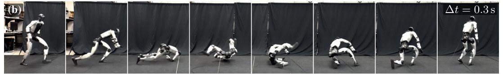
怎么读这张图
- 第 1–2 帧：站立，侧身向下压。
- 第 3–5 帧：躯干、手臂和腿着地翻滚：接触多、且不光滑，这正是 side roll 难的地方。
- 第 6–8 帧：跪起、站直，回到直立。
flowchart LR IN["Side roll clip
22 段之一
与 129,514 段同训"]:::example IN --> A1["Model-free PPO
SONIC · PPO-Sim
从带噪 rollout 估梯度"] A1 --> AX["动作越多 rollout 越多
加卡也补不上
SONIC 22/22 败
PPO-Sim 8 卡 0.72"]:::gap IN --> B1["Specialists + distill
BeyondMimic · PHC
先为它单训 expert"] B1 --> BX["expert 随动作数增加
合并靠有损蒸馏
未对比"]:::gap IN --> C1["World model + PPO
RWM · RWM-U · PPO-WM
在模型里 rollout"] C1 --> CX["模型可微，梯度没用上
多 ~64× imagined steps"]:::gap IN --> D1["BPTT, no critic
SuperTrack · ControlVAE
只优化 H 步 reward"] D1 --> DX["窗口外的回报看不到
H ≤ 16 训不出
4 m/s 推力下倒地"]:::gap
SONIC 的 22/22 来自 Table A.8（side roll 整组失败）。PPO-Sim 是同设定的对照：LAFAN1（40 段、2.45 h）上 18 h 内 1/4/8 卡只到 0.60/0.70/0.72，SuperMimic 1 卡 1.2 h 到 0.82（Fig. 4a）。Specialists + distill 没在 benchmark 上比，“有损”是 §1 的说法，落到 side roll 是推断。64× 是 LAFAN1 walk/run/sprint 上 PPO-WM 的对照（Fig. 5b）。No critic 是本文去掉 critic 的 ablation，对应 [12, 6] 的做法（§3.3、§4.3）；4 m/s 是站 T-pose 时被推，不是 side roll。
根本问题：所有动作都发生在同一副 G1 刚体动力学里，model-free RL 却对每个动作都从带噪的仿真 rollout 重新估计“动作会带来什么”，没把共享的结构学下来，所以动作越多算力越多。 这篇的切入点：把这份共享动力学学成一个可微 world model（只用普通仿真器的日志），在它的短想象 rollout 上 BPTT 拿解析梯度，再用 critic 补上窗口外的回报。
Related work
| 相关工作 | 解决什么 | 怎么解决 | 和本文的区别 |
|---|---|---|---|
| 同一问题 · 别的解法 | |||
| 大规模 motion tracking DeepMimic, PHC, SONIC | 在仿真里复现参考动作，扩到大动作库，上真机 | model-free RL（PPO）；SONIC 同时加数据、模型和算力 | 梯度靠 rollout 估 → 本文学一个所有动作共享的可微动力学，用解析梯度，1 卡 |
| Learned differentiable dynamics SuperTrack, ControlVAE, MoConVQ, SuperDyno | 仿真角色（动画）的 motion control | 学一个可微 surrogate 代替仿真器，解析 policy gradient；SuperDyno 扩到上万段 clip | 停在仿真角色 → 本文单卡训大规模 tracker 并上真机：WM 以 sim context ξ 为条件，actor 用带噪本体感知 + goal；加 critic |
| 运动表示 + 下游控制 NPMP, PhysicsVAE, PULSE, LATENT, MaskedMimic, BeyondMimic | 把 tracker 接到下游 goal 接口（速度、部分身体等） | 先学 latent motor 表示（BC / DAgger）再 RL；或 inpainting、guided diffusion；SONIC 联训 goal encoder | 多为分阶段或只有 distill 信号 → 本文 encoder + 共享 decoder 都经同一个 WM 联训，接口可 distill 也可用自己的 task reward（RL） |
| 相似做法 · 别的问题 | |||
| World model + 想象 Dreamer, DreamerV3, TD-MPC, DayDreamer | 通用控制：在学到的模型里学 policy | latent dynamics 上 actor-critic；TD-MPC 短视界规划 + terminal value；DayDreamer 直接在真机上学 | 通用 MBRL → 本文的模型直接预测仿真状态、以 ξ 为条件，从仿真日志学，专攻大规模 humanoid tracking + sim-to-real |
| 可微仿真的解析梯度 SHAC, quadruped [20] | 用解析梯度快速学 policy | SHAC 穿过可微仿真器做短视界 actor-critic；[20] 用简化的可微 surrogate + 高保真前向仿真 | surrogate 从任意标准仿真器的 transitions 学；硬终止换成可微的 soft survival weight，critic 不用 target network |
| Neural simulator + PPO RWM, RWM-U | 在学到的神经仿真器里训 policy，再上真机 | PPO 在想象 rollout 上；RWM-U 加不确定性惩罚、离线优化；WM 先用别的 policy 的轨迹预训 | 本文对 return 求导（BPTT 而非 PPO）；WM 用自己 policy 采的数据，训练中一直更新 |
来源：论文 §2、§3.3 和 Table 1，未另行检索。“直接预测仿真状态”取自 §3.2 的 f_ω 定义，§2 没有逐条和 Dreamer 对比。
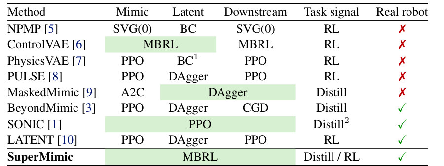
怎么读这张图
- Mimic / Latent / Downstream 三列：模仿参考、学 latent 表示、训下游接口这三个阶段各用什么训练。
- 绿色合并格：这几个阶段联合训练；相邻的未合并格是先训一个、冻住，再训下一个。
- SONIC 一行：三阶段 PPO 联训；Task signal 是 Distill²：goal encoder 只跟 tracking reward 和 latent 对齐 loss 训，没有接口自己的 task reward。
- ControlVAE 一行：唯一同样用 MBRL 的前作，但 Downstream 单独训，而且没上真机（✗）。
- SuperMimic 一行：三阶段全部 MBRL 联训，Task signal 是 Distill / RL（§4.5 正是速度接口的 RL 对 distill），并上了真机。
Level 1 · Big picture
一个从仿真日志学来的可微 world model 装下所有动作；policy 在它里面想象，拿解析梯度
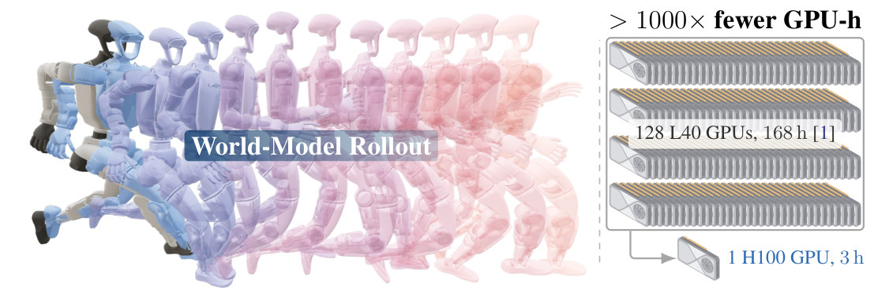
1000× fewer GPU-h">怎么读这张图
- 左 “World-Model Rollout”：最左实色的 G1 是起点，后面一串半透明的 G1 是 world model 往后预测出的状态，蓝到粉是先后顺序（颜色含义是我的读法，caption 只说这是 imagined rollout）。这串状态里没有仿真器参与。
- 右上 “128 L40 GPUs, 168 h [1]”：SONIC 的训练规模，约 21,000 GPU-h。
- 右下 “1 H100 GPU, 3 h”：SuperMimic 超过 SONIC 的 return 所需；顶部 “> 1000× fewer GPU-h” 是两者之比（实际约 7200×，§4.1）。
flowchart LR I["Input
129,514 段动作
含 side roll"]:::example I --> W["One world model f_ω
学自 MuJoCo Warp 日志"]:::win W --> B["BPTT + critic
32 步想象 → ∇θ"]:::win B --> O["Output：一个 π_θ
真机 G1 侧滚"]
Level 2 · Stages
4 个 stage：一个循环里的 3 步，加上部署
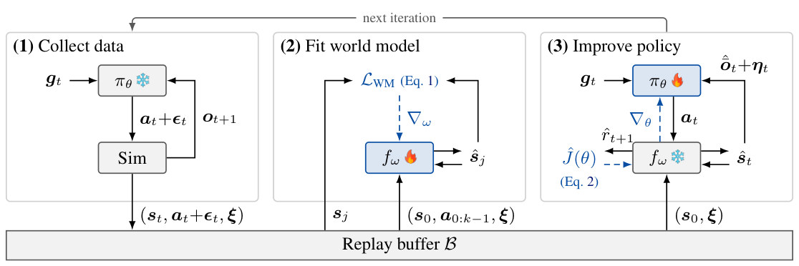
图里的符号
| 符号 | 白话 | 在 side roll 里 |
|---|---|---|
| (1) Collect data | ||
| t | 第几步。一步 = 0.02 s（50 Hz 控制） | 侧滚开始后的第 t 步 |
| πθ | policy：一个神经网络，θ 是它的权重，也就是要训练的参数 | 控制 G1 做侧滚的那个控制器 |
| gt | goal：参考动作接下来的 10 帧 | 接下来 0.2 s 侧滚该是什么姿态 |
| ot, ot+1 | 观测：机器人自己的传感器读数，一帧 93 个数（关节角 29、关节速度 29、IMU 角速度 3、重力方向 3、上一步动作 29）；policy 看最近 10 帧 | 侧躺翻滚时这些读数是多少 |
| at | 动作：29 个关节的目标角（相对默认姿态，乘一个系数） | 下一刻每个关节往哪转 |
| εt | 采数据时故意加的动作噪声，每维标准差 0.1 | 让 world model 见到更多样的动作 |
| Sim | 仿真器 MuJoCo Warp | 算出 0.02 s 后真实会怎样 |
| st | 仿真器里机器人的完整状态（论文没逐项列出，见 Stage 2） | 侧躺时身体各部分的位置和速度 |
| ξ | 这个 episode 的物理参数：摩擦、关节标定偏置、躯干质心偏移 | 比如摩擦系数抽到 0.7 |
| 𝓑 | replay buffer：存最近的数据，每个环境 1000 步 | 侧滚和其他所有动作的数据都在里面 |
| ❄ / 🔥 | 这一步里冻结（不更新）/ 正在训练 | 采数据时 policy 不更新 |
| (2) Fit world model | ||
| fω | world model：一个 MLP，ω 是它的权重 | 学“侧躺时这样动，下一刻会怎样” |
| ŝ、r̂、ô | 戴帽子的量是 world model 的预测；不戴帽子的是仿真器里的真值 | ŝj 是预测的姿态，sj 是真实姿态 |
| s0, a0:k−1 | 从 buffer 取出的一段：起点状态，加上接下来 k = 8 个实际执行的动作 | 从“侧躺”这一刻起的 8 步 |
| 𝓛WM | world model 的误差（Eq. 1）：预测和真值差多少 | 8 步里预测的姿态偏了多少 |
| ∇ω | 梯度：往哪个方向改 ω 能让误差变小。图里的虚线箭头都是梯度 | 只改 world model，不改 policy |
| (3) Improve policy | ||
| ôt + ηt | world model 预测的无噪声观测（帽子 = 预测，横线 = 无噪声），再加上传感器噪声 ηt | 假装是传感器读数，喂给 policy |
| r̂t+1 | 预测的 reward：这一步和参考动作有多像 | 想象中这一步侧滚做得多像 |
| Ĵ(θ) | policy 的总分（Eq. 2）：32 步预测 reward 之和，加上 critic 对之后的估计 | 0.64 s 想象里的总分 |
| ∇θ | 梯度：往哪个方向改 policy 能让 Ĵ 变大。它穿过 fω 传回来，这就是 BPTT | 告诉 32 个动作各自该怎么改 |
怎么读这张图
- (1) Collect data：冻结的 policy 看着目标（gt）出动作，加上噪声交给仿真器；仿真器回下一刻的观测，如此循环。每一步把“完整状态、实际执行的动作、物理参数”存进底部的 buffer。
- (2) Fit world model：从 buffer 取一段（起点 + 8 个动作），让 world model 自己往后推 8 步，把推出来的预测和 buffer 里的真值比；误差的梯度（蓝色虚线）只改 world model。
- (3) Improve policy：从 buffer 只取一个起点，之后 policy 和冻结的 world model 来回 32 步：policy 出动作，world model 给出下一刻的状态和这一步的 reward。32 步总分 Ĵ 的梯度沿蓝色虚线穿过 world model，回到 policy。
- 顶部 “next iteration”：更新后的 policy 回到 (1) 再采数据，三步每轮都做。
- 仿真器那格没有梯度箭头：梯度从不穿过仿真器，只穿过 world model；world model 在 (2) 里训练，在 (3) 里冻结。
flowchart LR S1["1 · Collect
side roll + 动作噪声"] --> S2["2 · Fit world model
8 步窗口 → f_ω"]:::win S2 --> S3["3 · Improve policy
32 步想象 + BPTT"]:::win S3 -->|next iteration| S1 S3 --> S4["4 · Deploy + downstream
真机 G1 侧滚"] click S1 href "#stage-1" click S2 href "#stage-2" click S3 href "#stage-3" click S4 href "#stage-4"
点击 stage 展开 Level 3 细节；world model 的输入、输出和演示在 Stage 2，贯穿全程的 一个循环、一个模型 单独成块。
Level 3 · Details
每个 stage 的细节
Stage 1 Collect data · 仿真采数据 冻结的 policy、参考动作、物理参数 ξ → buffer 里一条条（状态、实际执行的动作、ξ）
- Why：world model 要从真实的仿真 transitions 学动力学；仿真器只管前向，不必可微，带非光滑接触也照用（§1）。
- 仿真：MuJoCo Warp（GPU 版 MuJoCo），每张卡 4096 个环境；一个控制步 50 Hz，即 4 个 5 ms substep。
- 动作：policy 是确定性的 a_t = π_θ(o_t, g_t)；执行时加噪声 ε_t ~ 𝒩(0, 0.1²)，让 world model 见到更宽的动作范围（噪声可选）。a_t 映射成关节 setpoint q^sp = α a_t + q⁰，PD 增益低，setpoint 近似力矩。
- 观测 o_t：关节位置 q − q⁰（29）、关节速度（29）、IMU 角速度（3）、投影重力（3）、上一步动作（29），各带传感器噪声 η（Table A.1）；policy 看最近 10 帧。goal g_t 是未来 K = 10 帧参考（BeyondMimic 只用 1 帧）。
- Sim context ξ（每个 episode 抽一次）：摩擦 μ ~ 𝒰[0.3, 1.2]，关节标定偏置 ~ 𝒰[−0.01, 0.01] rad，躯干质心偏移 Δx ~ 𝒰[−0.025, 0.025] m、Δy、Δz ~ 𝒰[−0.05, 0.05] m（Table A.3）。去掉了 BeyondMimic 的 root 速度推力：推力让状态跳变，确定性的 world model 学不了。
- Return-based reset sampling（App. D.1）：动作时间轴切成 1 s 的 bin，每个 bin 记折扣回报 G_b；重置点 50% 均匀、40% 按 softmax(−25 G_b / G_max)、10% 按各 bin 过去的 softmax 权重：做得差的片段多练，学会后仍保留少量练习。
- Buffer：每个环境 1000 步，新的挤掉最旧的。旧 policy 采的数据对拟合 world model 仍然有效：动力学和谁采的无关。
- 存的只有机器人自己：每一步是机器人的完整状态、实际执行的动作和 ξ，再加仿真器给的 reward 和是否摔倒（Eq. 1 要拿它们对答案）。仿真里没有别的物体，只有平地。
- 终止：root 和参考的高度差 > 0.25 m，或倾斜误差 > 0.8（直立参考下约 78°）；不像 BeyondMimic 那样按末端偏差终止。
- 数据（App. E）：BONES-SEED 的 G1 retarget 142,220 段 → 名字过滤（stair、ladder、box、chair、sit、climb 等）剩 129,667 → 可行性过滤（站在高处、穿地、双脚悬空）剩 129,514 段。
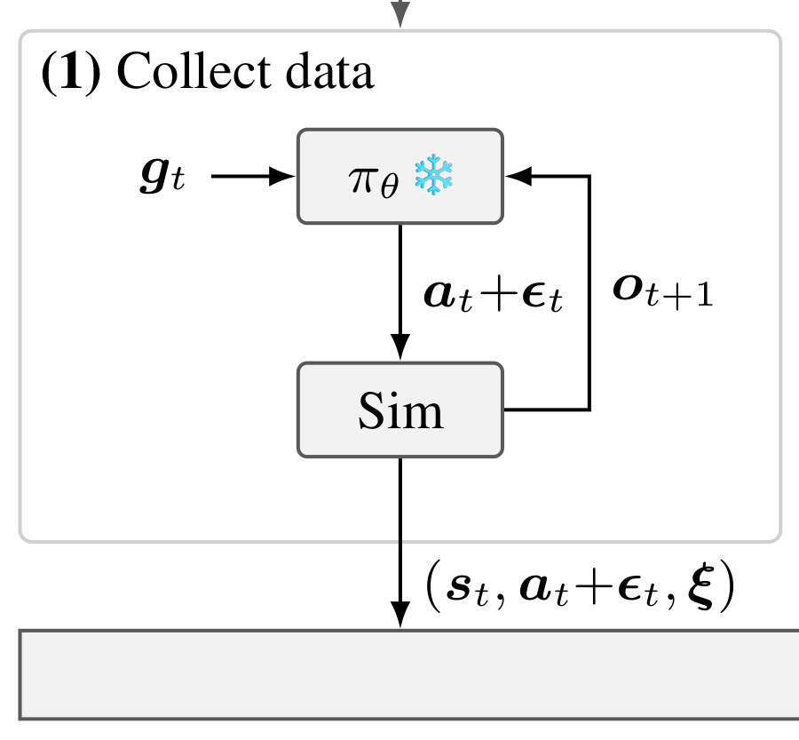
怎么读这张图
- π_θ❄ ⇄ Sim：冻结的 policy 和仿真器来回一步一步走：a_t+ε_t 下去，o_{t+1} 回来。
- 向下的箭头：每步把 (s_t, a_t+ε_t, ξ) 写进 buffer：存的是执行过的带噪动作，连同这个 episode 的 ξ。
flowchart LR a["Reset
side roll 某个 1 s bin"] --> b["π_θ + 噪声
a_t + ε_t"] b --> c["MuJoCo Warp
躯干、四肢触地"] c --> d["Replay buffer
(s_t, a_t+ε_t, ξ)"]
Running example 在这一步
每 0.02 s，每张卡上 4096 个仿真 G1 同时做一遍下面五步：
- 读传感器（ot）：关节角、关节速度、IMU 角速度、重力方向、上一步动作，一帧 93 个数，取最近 10 帧。
- 取目标（gt）：side roll 参考动作接下来的 10 帧，也就是未来 0.2 s 该是什么姿态。
- 算动作（at）：冻结的 policy πθ 根据这两样，给出 29 个关节的目标角。
- 加噪声、执行（at + εt）：每维加标准差 0.1 的噪声，交给 MuJoCo Warp 算 0.02 s（4 个 5 ms 小步），躯干、手臂和地面的接触照常算。
- 记下来：把完整状态 st、实际执行的动作 at + εt、这个 episode 的物理参数 ξ（比如摩擦 0.7）写进 buffer 𝓑。
倒了（root 高度偏离超过 0.25 m，或倾斜误差超过 0.8）就重置。若贴地翻滚那一段回报低，return-based sampling 会更常从那里重置（推断：论文只给了规则，没报 side roll 的数据）。
Stage 2 Fit world model · 拟合可微 world model 𝓑 里的 8 步窗口 (s_0, a_{0:7}, ξ) → 更新后的 f_ω（和 reward、观测、终止 head）
- Why：BPTT 需要可微的预测和 Jacobian，仿真器给不了，就学一个替身（论文原话 “a learned differentiable surrogate of the simulator”）；一个模型学所有动作共有的身体和接触动力学（§3.2）。
输入和输出
flowchart LR S["ŝ_t 机器人状态
侧躺、正在翻"] --> F["f_ω
MLP 2048×3"]:::win A["a_t 动作
29 个关节目标角"] --> F X["ξ 物理参数
摩擦、标定、质心"] --> F F --> N["下一步状态 ŝ
0.02 s 后"]
| 输入 | 是什么 | 侧滚这一步 |
|---|---|---|
| ŝt 状态 | 机器人自己的完整状态，一串数字。论文没列出具体内容；reward 要用各 body 的位置、朝向和速度，所以 s 至少能算出这些（推断）。下面的非官方复现用的是仿真器的 qpos + qvel。 | G1 侧躺在地上、正在翻 |
| at 动作 | 29 个关节的目标角（setpoint = α·at + 默认姿态 q⁰）；训练数据里是实际执行的带噪动作 at + εt | 这一步每个关节往哪转 |
| ξ 物理参数 | 每个 episode 抽一次、整段不变的三组参数（下表） | 比如摩擦系数 0.7 |
| ξ 里的参数 | 随机范围 | 物理意思 |
|---|---|---|
| 摩擦系数 μ | 𝒰[0.3, 1.2] | 接触面滑不滑：0.3 很滑，1.2 抓地很好 |
| 关节标定偏置 Δq⁰j | 每个关节 𝒰[−0.01, 0.01] rad（约 ±0.6°） | 真机关节的零位和标称值有一点偏差 |
| 躯干质心偏移 | Δx 𝒰[−0.025, 0.025] m；Δy、Δz 𝒰[−0.05, 0.05] m | 躯干重心比标称位置偏前后 2.5 cm、左右和上下 5 cm 以内 |
来源 Table A.3（沿用 BeyondMimic 的 domain randomization，去掉了 root 速度推力）。world model 和 critic 拿到 ξ 的真值；部署的 actor 拿不到，只能对它们鲁棒。
| 输出（head） | 公式 | 用来做什么 |
|---|---|---|
| 下一步状态 | ŝt+1 = fω(ŝt, at, ξ) | 0.02 s 后的状态；连推 32 次就是想象 rollout |
| reward | r̂t+1 = rω(ŝt, at, gt) | 这一步和参考动作多像；只有它和终止 head 用到 goal |
| 观测 | ôt = gω(ŝt, ξ) | 无噪声的传感器读数，加噪声后喂给 policy |
| 终止概率 | d̂t = dω(ŝt, gt) | 摔倒的概率，用在 soft survival weight |
每个 head 可以学出来，也可以直接按公式算，论文没说哪个是哪个；只有动力学 fω 的结构写明了：MLP (2048, 2048, 2048)（Table A.4）。
- st 和 at 不重复：st 是“现在在哪、怎么在动”，at 是“这一步打算怎么动”。同一个状态后面可以接不同的动作，下一步就不同；采数据时加噪声，就是让模型在相似的状态下见到不同的动作。BPTT 要的正是“动作改一点，下一步怎么变”，所以 at 必须单独输入。st 里可能带着上一步的动作（观测里有它），但那是上一步的。
- 时间不是输入：第几步、第几段动作都不进 fω。物理规律对所有动作都一样，所以一个模型能服务全部 129,514 段动作；时间只体现在“调用一次 = 往前 0.02 s”。
- goal 不进动力学：gt 只进 reward 和终止 head。
- 没有历史：只看当前这一步的状态，不看前几帧。
- 没有噪声：它是确定性的；传感器噪声 η 在模型外加，root 速度推力被去掉，因为这种突变它学不了（App. A）。
一个非官方复现怎么定义 s
- realmimic（2026-10-27 发布，与原作者无关，单张 RTX 4090 训 10.5 h）导出的 world model：输入 state 71 维 = MuJoCo 的 qpos 36 + qvel 35，action 29 维，foot friction 1 维；输出 20 ms 后的 71 维 state（见它的
web/world_model.json）。 - 按 MuJoCo 的惯例，qpos 36 = 根位置 3 + 根朝向四元数 4 + 29 个关节角；qvel 35 = 根线速度 3 + 根角速度 3 + 29 个关节速度。
- 它把状态放在 body frame 里：原来的 heading frame 在骨盆朝正上或正下（翻跟头中途）时是奇异的。导出版只把摩擦当输入，标定偏置和质心偏移固定为 0。
- 这些是复现者的选择，不是论文写的，但给了 s 最直接的一种具体形式：仿真器的广义坐标和速度。
怎么训练
- Eq. 1：从 ŝ_0 = s_0 起，用记录的动作自回归推 k = 8 步，每步罚 ‖ŝ_j − s_j‖² + (r̂_j − r_j)² + ‖ô_j − ō_j‖² + BCE(d̂_j, d_j)；解析 head 没有 loss 项。
- k = 8 为什么够：自回归拟合让模型学会纠正自己的预测误差，所以推 32 步（比 8 长）甚至更久也稳（§3.3）。
- 网络与训练：f_ω 是 MLP (2048, 2048, 2048)；Adam，lr 2×10⁻⁴（1 卡），每次更新 10 个 batch × 2048 个窗口。每轮都更新，不是先训好再冻住。
- 证据（Fig. 3c）：数据从 1 h 加到 264 h，8 步预测误差保持在 0.007–0.011（只算状态，按预设的 nominal error 归一，在 policy rollout 上在线测）。
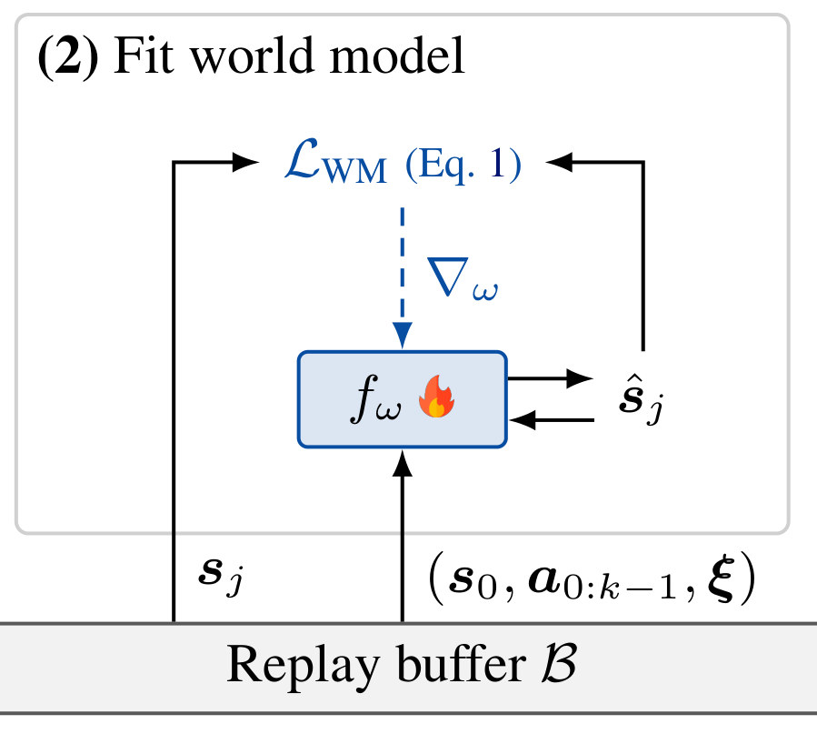
怎么读这张图
- f_ω🔥 右侧的小回路：ŝ_j 喂回 f_ω，这就是自回归：后面的预测用的是自己前面的预测，不是真值。
- 𝓛_WM（Eq. 1）：左边进真值 s_j，右边进预测 ŝ_j；蓝色虚线 ∇_ω 是唯一的梯度，只改 f_ω。
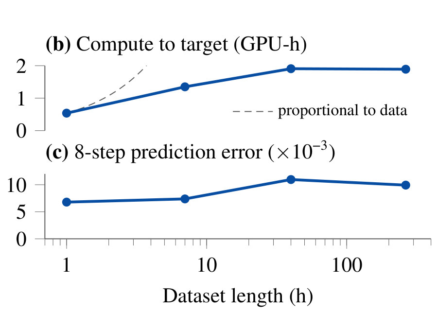
怎么读这张图
- (c) 8-step prediction error：1、7、40、264 h 四个数据量，误差在 7 到 11（×10⁻³）之间，没有随数据变多而变差。
- (b) Compute to target：达到目标 return 的 GPU-h 只缓慢增长（读图约 0.5 → 1.9 GPU-h）；灰色虚线是“和数据量成正比”时的样子。
flowchart LR a["8 步窗口
s_0 + a_0…a_7 + ξ"] --> b["f_ω 自回归
ŝ_1 … ŝ_8"] b --> c["Eq. 1 loss
状态、reward
观测、终止"] c --> d["∇_ω
更新同一个 f_ω"]
项目主页上的演示
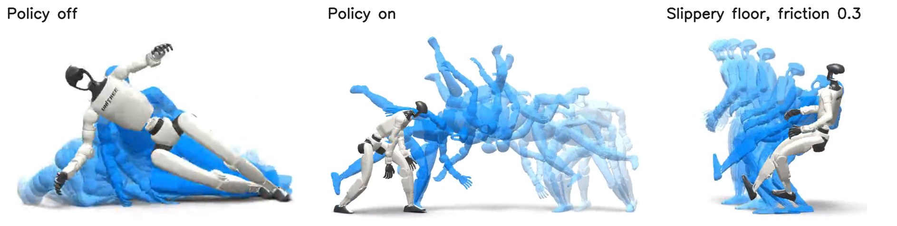
怎么读这张图
- 蓝色残影：叠了好几步的预测，越浅离当前时刻越远（读图）。预测准，蓝色就贴着白色。
- Policy off：policy 关掉，机器人倒下，world model 也预测出了倒下（主页原话）：它学到了没人控制时摔倒、触地的动力学。
- Policy on：policy 拿 world model 预测的状态当输入，预测一直贴着仿真器（主页原话）。整段远长于训练时的 32 步，对应 §3.3 说的长 rollout 也稳定。
- Slippery floor：机器人刹车时地面变滑（摩擦 0.3），脚在滑；world model 被告知了摩擦，预测出了滑动（主页原话）。这就是 ξ 作为输入的作用：同样的状态和动作，摩擦不同，下一步就不同。
它不是视频生成模型
| SuperMimic 的 world model | 视频生成式 world model（一般背景） | |
|---|---|---|
| 预测什么 | 下一步的状态向量 | 未来帧的像素 |
| 网络 | MLP，确定性 | 大型 diffusion 或 transformer，通常随机采样 |
| 训练数据 | 一个仿真器的 transitions | 大量视频 |
| 用途 | 让梯度穿过它训 policy | 生成数据、评测、规划 |
- 它的“世界”只有一台 G1 和一块平地：平地永远一样，被记进了权重；会变的摩擦等参数作为 ξ 输入。Fig. 1 左边和上面的截帧，都是把预测的状态套到机器人模型上画出来的（推断：模型只输出数字）。
- 要跳上箱子得改输入：固定的箱子可以像 ξ 一样作为条件（位置、尺寸或高度图）；会被推动的箱子，位姿和速度得放进状态。论文 §6 只说地形和物体交互是 ongoing work，具体做法是推断。
Running example 在这一步
从 buffer 抽到一个 side roll 窗口，例如 s_0 是 G1 侧躺在地上，后面跟 8 个记录的动作。f_ω 只看 s_0 和这 8 个动作往后推 8 步（0.16 s），逐步和记录的 s_1 … s_8 比。同一批里还有走路、空翻等动作的窗口，更新的都是同一组权重 ω。
Stage 3 Improve policy · 在 world model 里想象 + BPTT buffer 里的起点 (s_0, ξ) → 32 步想象 rollout → 解析梯度 ∇_θ Ĵ 和 critic V_ψ
- Why：PPO 把动力学当黑箱，用采样动作的 advantage 加权 ∇_θ log π_θ（似然比估计）；BPTT 直接对每个动作求 return 的导数，短视界内方差低得多（§3.3）。
- BPTT 是什么：backpropagation through time。把 32 步想象展开成一条长计算链（每一步都是 policy 出动作、world model 算下一刻），再用链式法则从最后一步倒推回第一步。第 20 步的分取决于第 1 步的动作，BPTT 能把这份影响一路传回去；32 步用的是同一个 policy，各步的梯度加在同一组权重上。它不是本文提出的：BPTT 本身是训练循环神经网络（RNN）的老方法（一般背景，论文没讲出处）；穿过学到的可微模型做 BPTT 来训控制器，前作有 SuperTrack、ControlVAE（见 Related work）。本文的新意是把它做到 12.9 万段动作的 humanoid tracking，并上了真机。链上每一环都得可微，所以要用 world model，不能直接用仿真器。
- 想象：起点 s_0 ~ ρ_0 来自 replay buffer，带它记录的 ξ；每步模型给出 ô_t，再加回传感器噪声 η_t，policy 出 a_t = π_θ(ô_t + η_t, g_t)，f_ω 给出 ŝ_{t+1}、r̂_{t+1}、d̂。
- Soft survival weight：c_0 = 1，c_{t+1} = c_t (1 − d̂_{t+1})：终止概率可微，摔倒的代价也能传梯度（SHAC 用硬终止）。
- Eq. 2：Ĵ(θ) = E[ Σ_{t=0}^{H−1} γ^t ĉ_t r̂_{t+1} + γ^H ĉ_H V_ψ(ŝ_H, g_H, ξ) ]，H = 32，γ = 0.99；BPTT 经 f_ω 对 ŝ_t 和 a_t 的 Jacobian 求出一阶梯度 ∇_θ Ĵ。
- Critic（Eq. 3）：V_ψ 拟合在想象 transition 上倒推的 GAE 目标（λ = 0.95），目标每条 rollout 算一次后固定，没有 EMA target network。它估 32 步之后的回报，所以模型只需在 32 步内准。
- Reward：BeyondMimic 的 tracking reward（body 位置、朝向、线速度、角速度，root 位置、朝向；Table A.2），去掉 self-collision 惩罚：它防的是随机 policy 把两个身体部位压在一起、压低动作噪声来刷速度分，想象里 policy 是确定性的，这招没有收益。joint-limit 权重从 −10 降到 −2。
- 规模：每次更新 4096 条想象 rollout；Adam β = (0.9, 0.95)；梯度先按全局 norm 1.0、再逐元素 0.1 裁剪（Table A.5）。
policy 怎么知道往哪改
- 没有“成功 / 失败”标签，只有每步的 reward：每 0.02 s 比一次机器人和参考动作有多像，越像分越高（下表）。
- 摔倒 = 后面的分全没了：root 高度偏离超过 0.25 m 或倾斜误差超过 0.8 就终止。想象里终止是一个概率 d̂，生存权重 ĉ 跟着变小，后面每步的 reward 都要乘它，所以“别摔”自动算进了总分。
- 评测时的失败：一段动作从头放到尾，触发一次终止就算失败；normalized return 是整段 reward 之和除以满分（§4）。
| reward 项 | 白话 | 权重 |
|---|---|---|
| Body position | 每个被跟踪的身体部位离参考位置多远（尺度 0.3 m） | 1.0 |
| Body orientation | 每个部位的朝向差多少（尺度 0.4 rad） | 1.0 |
| Body linear velocity | 每个部位的速度差多少（尺度 1.0 m/s） | 1.0 |
| Body angular velocity | 每个部位的转速差多少（尺度 3.14 rad/s） | 1.0 |
| Root position / orientation | 骨盆的位置、朝向差多少 | 0.5 / 0.5 |
| Action smoothness | 动作别一步一跳：罚 ‖at − at−1‖² | −0.1 |
| Joint limit | 关节超出限位就罚 | −2 |
前六项都是 exp(−误差² / 尺度²)：完全对上得 1，差得越多越接近 0。每项再乘控制周期 0.02 s（Table A.2、A.6 的注）。单位是我按物理量补的。
梯度怎么算出来（Eq. 2，Algorithm A.1 第 6–7 行）
- 正向想象：policy（权重 θ）出动作 → world model 预测下一刻的状态 → 算这一步的 reward；重复 32 步。
- 算总分 Ĵ：32 个 reward 乘上生存权重和折扣（γ = 0.99）加起来，再加上 critic 估的 32 步之后的分。
- 反向求导：每个 reward 取决于预测的状态，状态取决于动作，动作取决于 θ；链式法则沿这条路一路传回 θ，中间经过 world model 的 Jacobian。这就是 BPTT。
- 更新：θ 往让总分变大的方向走一小步（Adam，学习率 2×10⁻⁴）；每次用 4096 条想象 rollout 一起算。
对比 PPO：它只能试，随机试动作，哪个分高就提高它的概率；BPTT 直接知道“这个关节多转一点，分会变高还是变低”。
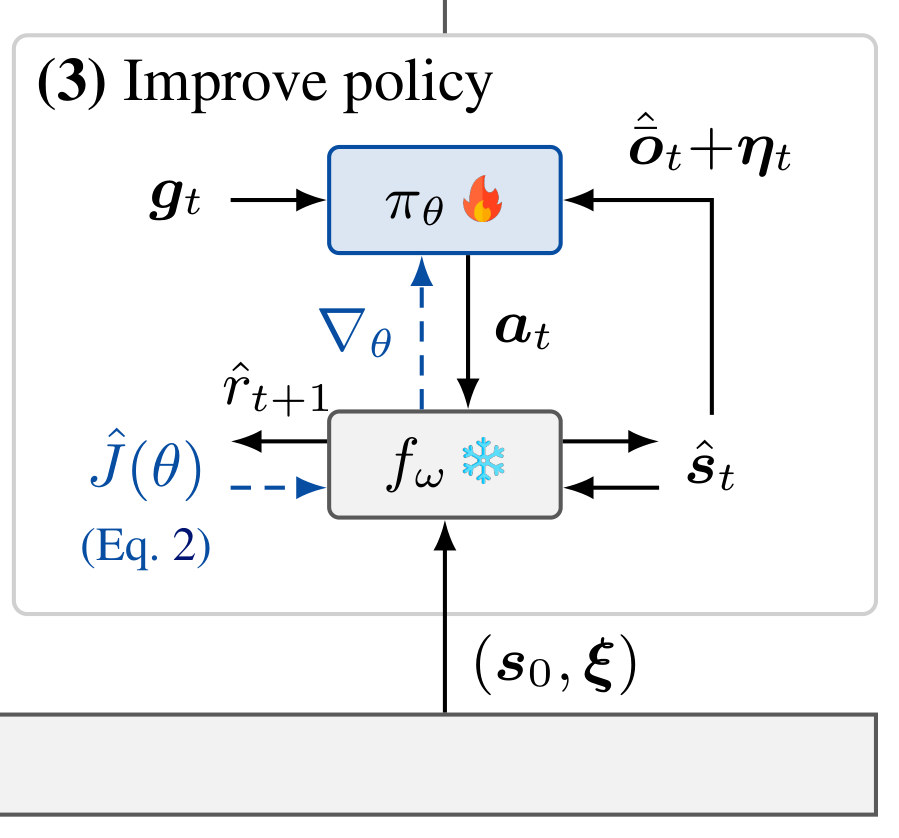
怎么读这张图
- 从下面进来的只有 (s_0, ξ)：buffer 只提供起点，32 步全在模型里走。
- π_θ🔥 ⇄ f_ω❄：policy 看 ô_t+η_t（模型的观测加噪声）出 a_t，f_ω 回 ŝ_t 和 r̂_{t+1}。
- 蓝色虚线：Ĵ(θ) → f_ω → ∇_θ → π_θ：梯度穿过冻结的 f_ω 回到 policy，这就是 BPTT。
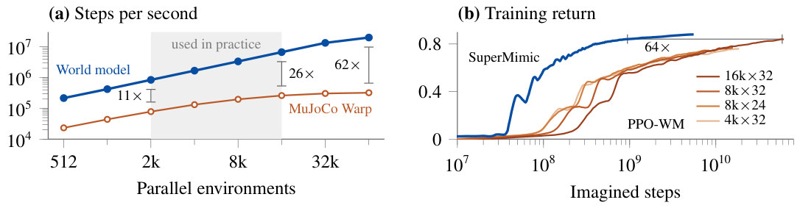
怎么读这张图
- (a) Steps per second：一步 = 一个 50 Hz 控制步。灰色区是实际用的 2k–16k 个并行环境，world model（蓝）比 MuJoCo Warp（橙）快 >10×（图上标 11×、26×），64k 时 62×。
- (b) Training return：横轴是 imagined steps（对数）。橙色几条是 PPO-WM：在同一个 world model 的 rollout 上跑 PPO，批大小 = 并行 rollout × 每条步数，最好的是 16k×32。SuperMimic（蓝）达到 PPO-WM 的最佳 return 少用约 64× 步，所以收益不只来自 rollout 快。
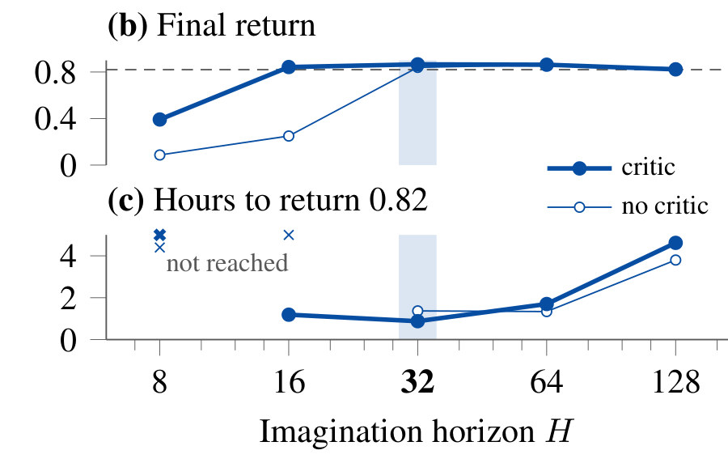
怎么读这张图
- (b) Final return：实心点有 critic，空心点没有。没 critic 时 H ≤ 16 训不出来；有 critic 时 H = 16 就和无 critic 的 H = 32 一样好。
- (c) Hours to return 0.82：× 表示没到（H = 8 两种都没到，H = 16 无 critic 没到）。H = 32（阴影，默认值）最快；H 从 64 到 128，时间约翻三倍，最终 return 还降了。
- 只在正文里的推力测试（§4.3）：站 T-pose 时被 0.5–4 m/s 推，有 critic 的 policy 0.5–2.4 s 内站稳；没 critic 的一直踉跄，4 m/s 时倒地。
flowchart LR a["起点
buffer 里的 s_0, ξ"] --> b["想象 32 步
π_θ ⇄ f_ω（冻结）"] b --> c["Ĵ(θ)，Eq. 2
Σ γ^t ĉ_t r̂ + V_ψ"] c --> d["BPTT
∇θ 回到 32 个动作"]:::win
Running example 在这一步
从 buffer 抽到 side roll 中段的一个状态当起点，例如 G1 正侧躺翻滚。f_ω 往后想象 32 步 = 0.64 s，policy 每步只看模型给的观测加噪声。BPTT 告诉这 32 个动作各自该怎么改才跟得更紧。比如想象到第 5 步时，参考说躯干此刻该贴近地面，预测的躯干却高了一点，body position 那项就不到满分；梯度沿 world model 往回传，算出前几步哪些关节的动作改一点能让躯干更低，θ 就被改成在类似状态下输出这样的动作（示意，不是论文里的数字）。32 步之后的部分（比如滚完站起来）由 V_ψ 估（推断：论文没有拆 side roll 的回报）。视界再短又没有 critic，就训不出来（Fig. 4b）。
Stage 4 Deploy + downstream · 上真机、接新接口 训好的 π_θ → 真机 Unitree G1；同一个 f_ω → 新的 goal 接口（速度指令）
- Why：证明经 world model 训出的 policy 能上真机；同一个模型还能用接口自己的 task reward 训下游接口，而不只靠蒸馏（§4.4、§4.5）。
- 部署：一个通用 tracker，不逐动作调参。actor 只用带噪本体感知 + goal，ξ 只喂给 world model 和 critic。真机演示 4 个动作：skipping jump、side roll、90° flip、原地 360° flip（Fig. 6；只有视频帧，没有真机成功率）。
- 户外片段：项目主页另有真机在桉树林和海湾边的视频，论文正文没提，也没有数字。policy 看不见周围，机器人都在空地上动，没碰过树；树林检验的是地面：落叶、树皮，比仿真的硬平地软、略不平（下面第二张图）。
- 接口结构（App. B）：每个接口一个 encoder enc_θ,i(g) → 32 维 latent z（tanh 限幅）→ 共享 decoder dec_θ(z, o) → 动作。接口举例：完整参考动作、速度指令、末端位姿、SMPL 身体姿态。各有自己的 reward、终止和 critic，都穿过同一个 f_ω，不按接口重训。
- Distill 和 RL：distill 用 motion-tracking reward 训，指令从参考动作读出；RL 用接口自己的 task reward（速度跟踪，Table A.6）经 world model 训。下游 rollout 的梯度只到 encoder（decoder 权重 stop-gradient）；RL encoder 另有权重 0.1 的 latent 对齐 loss，拉向 motion encoder 的 latent。
- 速度接口：指令 (v_x, v_y, ω_z)，v_x ∈ [−1.5, 2] m/s，v_y ∈ [−1.32, 1.32] m/s，ω_z ∈ [−3.35, 3.35] rad/s；和 motion tracking 联训 100,000 iteration，数据是 LAFAN1 和 BONES-SEED 里的走跑动作。
- Step test（App. G.2）：672 个指令（三个平面各 15×15 网格，去掉站立），每个从站立起跑 5 s、测 4 次。RL encoder 在 650 个上误差更低，distill 在 15 个上；中位相对误差 0.16 对 0.49。distill 在 7 个“平移 + 转速 ≥ 2.8 rad/s”的指令上每次都摔，那里动作库几乎没数据。
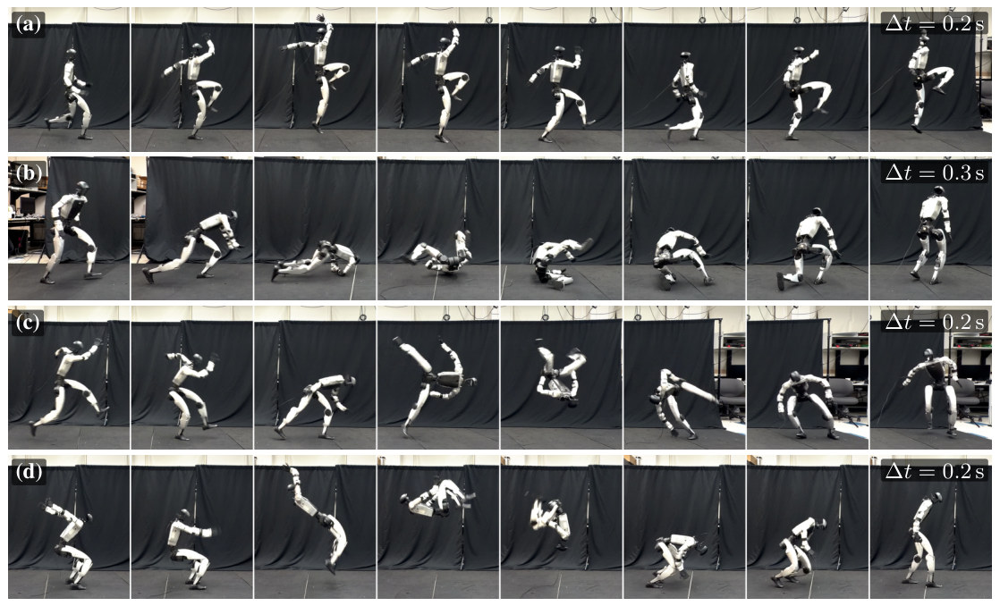
怎么读这张图
- (a) skipping jump，Δt = 0.2 s：locomotion 类：单脚跳步、抬膝。
- (b) side roll，Δt = 0.3 s：本页的例子：躯干和四肢着地的接触密集动作。
- (c) 90° flip、(d) 原地 360° flip，Δt = 0.2 s：acrobatics：翻转、落地、站起。Table A.8 里 SONIC 的 44 段 flip 全部失败。
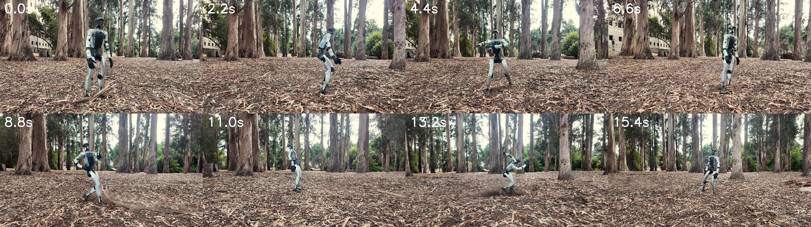
怎么读这张图
- 树：都在机器人身后一段距离，它始终在空地上动，没碰过树；policy 也看不见它们。
- 第 5、7 帧：翻滚时踢起落叶。地面软而松，和仿真里的硬平地不一样，这才是这段视频检验的东西。
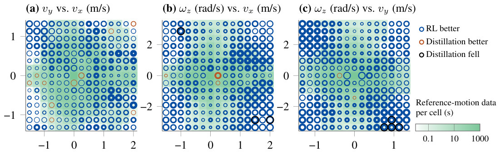
怎么读这张图
- 三个面板：速度指令空间的三个平面（第三个分量为 0）：(a) v_y–v_x，(b) ω_z–v_x，(c) ω_z–v_y；每个圈是一个指令。
- 圈的颜色和大小：蓝 = RL 更好，橙 = distill 更好，黑 = distill 摔倒；外圈面积 ∝ 两者中较大的相对误差，内孔 ∝ 较小的。
- 绿色底色：该格动作库里的参考数据秒数（0.1 到 1000 s）。黑圈都在 (b)(c) 里 |ω_z| 接近 3 rad/s 的角落，正是数据最少的地方。
flowchart LR m["Motion encoder
side roll 未来 10 帧"] --> z["latent z
32 维"] v["Velocity encoder
(v_x, v_y, ω_z)"]:::win --> z z --> d["Shared decoder
+ 最近 10 帧 o"] d --> g["G1 动作
29 维 setpoint"]
Running example 在这一步
训完的同一个 π_θ 直接上真机 G1 做 side roll（Fig. 6b），没有为它单独调参。例子再往前走一步：同一个 G1 改接摇杆式的速度指令，比如边走边快速转身（ω_z ≥ 2.8 rad/s）。动作库几乎没有这种数据，distill 出的 encoder 在 7 个这样的指令上摔倒；用速度 reward 经 world model 训的 RL encoder 一次没摔。
贯穿全程 One loop, one model · 一个循环、一个模型 buffer、world model、policy 每轮一起更新；一个 f_ω 服务全部 129,514 段动作
- Dyna 式循环：采数据 → 拟合 world model → 改进 policy，每轮都做；f_ω 只在 policy 的反向传播里冻结（§3.1，Algorithm A.1）。
- 不预训练：world model 用自己 policy 采的数据边训边更新；RWM、RWM-U 是先用别的 policy 的轨迹预训。
- 节奏（Table A.5）：update-to-data ratio 0.4；每次 world-model 更新配 1 次 policy 更新；共 320,000 iteration；lr 用 250,000 iteration cosine 衰减到 0.03×，之后不变；多卡数据并行、梯度平均。
- “3 h”包括什么：完整循环（采数据 + 拟合模型 + 更新 policy）的墙钟时间；checkpoint 评测在训练后做，不计入（§4.1）。
- 一个模型摊销整个动作库：side roll 的窗口和走路、空翻的窗口拟合同一个 f_ω；动作都由同一个人形身体执行，加数据只是给共享的身体和接触动力学更多证据，不要求新容量（§4.2）。
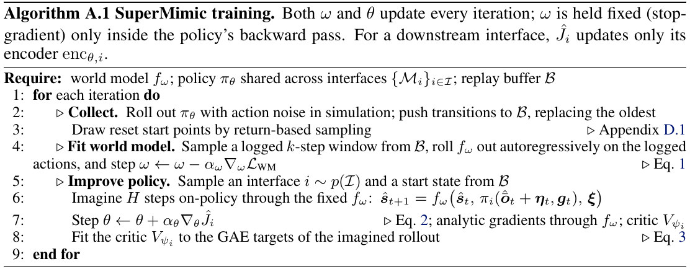
怎么读这张图
- 第 2–3 行 Collect：仿真里带噪 rollout，按 return 采样重置点（App. D.1）。
- 第 4 行 Fit world model：取一个 k 步窗口自回归，按 Eq. 1 更新 ω。
- 第 5–8 行 Improve policy：先抽一个接口 i ~ p(𝓘)，经冻结的 f_ω 想象 H 步，按 Eq. 2 走解析梯度更新 θ，按 Eq. 3 拟合 critic。
- 标题里的两句：ω 和 θ 每轮都更新；下游接口的 Ĵ_i 只更新它自己的 encoder。
flowchart LR w1["走路窗口"] --> F["一个 f_ω
MLP 2048×3"]:::win w2["side roll 窗口"]:::example --> F w3["空翻窗口"] --> F F --> P["一个 π_θ
129,514 段动作"]
Running example 在这一步
side roll 只占 129,514 段里的 22 段，却和所有动作共享同一个 f_ω 和同一个 π_θ。训练从头到尾不是分阶段：每一轮，side roll 的新数据进 buffer，f_ω 吸收它，policy 再在 f_ω 里练它。
Recap：例子覆盖了论文的哪些 idea
| 论文里的 idea | 例子里在哪体现 |
|---|---|
| 共享动力学 → 一个可微 world model（§3.2） | Stage 2 与全程块：side roll 窗口和其他动作的窗口拟合同一个 f_ω |
| 不微分仿真器，兼容非光滑接触（§1） | Stage 1：MuJoCo Warp 照常算 side roll 的触地；梯度只穿过 f_ω |
| ξ 条件、确定性模型、动作噪声（§3.1–3.2） | Stage 1–2：每个环境抽一组摩擦、质心、标定 ξ；模型预测无噪声观测 |
| k = 8 自回归拟合（Eq. 1） | Stage 2：从侧躺状态推 8 步，和记录比 |
| 32 步想象 + BPTT 解析梯度（Eq. 2） | Stage 3：从翻滚中段想象 0.64 s，梯度回到 32 个动作 |
| Soft survival weight | Stage 3：倒地概率 d̂ 可微，摔倒的代价能传梯度 |
| Critic 补窗口外回报（Eq. 3，§4.3） | Stage 3：滚完站起来那部分由 V_ψ 估 |
| Return-based reset sampling（App. D.1） | Stage 1：side roll 回报低的片段多练 |
| 想象快 >10×；一阶梯度少 ~64× 步（§4.2） | Stage 3：Fig. 5 |
| Dyna 循环，模型不预训练（§3.1） | 全程块：三步每轮一起更新 |
| 3 h、1 卡超过 SONIC，GPU-h 少 >1000×（§4.1） | Results：Fig. 3a |
| 失败数 25 对 179，9.8 h 后 0（App. F） | Results：side roll 22 → 2 → 0（Table A.8） |
| 扩数据：误差稳定，GPU-h 缓增（§4.2） | Stage 2：Fig. 3(b, c) |
| 真机 G1（§4.4） | Stage 4：side roll 上真机（Fig. 6b） |
| 下游接口 RL 对 distill（§4.5，App. B、G） | Stage 4：同一个 G1 改接速度指令，快速转身 |
| 动作数据过滤（App. E） | Stage 1：side roll 在平地上，过了两道过滤 |
| ξ 让一个模型适配不同摩擦（§3.2） | Stage 2：主页 slippery floor 演示，摩擦 0.3 时预测出滑步 |
Results
结果一览
- 3 h · 1 H100 超过 SONIC released checkpoint 的 normalized return 0.90；SONIC 是 128 张 L40 × 168 h（约 21,000 GPU-h）。墙钟少 >50×（约 56×），GPU-h 少 >1000×（约 7200×）（§4.1，Fig. 3a）。
- 25 对 179 129,514 段 benchmark 上的失败数（SuperMimic 1 卡 3 h 对 SONIC）；2 卡 9.8 h 后为 0（Table A.8）。SONIC 的 v1.1 checkpoint 失败 239 段。
- 22 → 2 → 0 side roll（22 段）的失败数：SONIC → SuperMimic 1 卡 3 h → 2 卡 9.8 h；flip（44 段）是 44 → 1 → 0。SuperMimic 3 h 时的 25 个失败里，14 个集中在前五组难动作（195 段），没有哪一组比 SONIC 失败得多。
- 0.82 · 1.2 h 同设定对照（LAFAN1，40 段，2.45 h）：SuperMimic 1 卡 1.2 h 到 0.82；PPO-Sim 在 18 h 内 1/4/8 卡只到 0.60/0.70/0.72，从 4 卡加到 8 卡几乎不涨（Fig. 4a）。
- 0.007–0.011 数据从 1 h 到 264 h（264×），world model 的 8 步预测误差保持在这个范围，到目标 return 的 GPU-h 只缓慢增长（Fig. 3b, c）。
- >10× · ~64× 想象 rollout 比 MuJoCo Warp 快 >10×（64k 个环境时 62×）；达到 PPO-WM 的最佳 return 少用约 64× imagined steps（Fig. 5）。
- 650 / 672 速度接口 step test 里 RL encoder 误差更低的指令数（distill 15 个）；中位相对误差 0.16 对 0.49（App. G.2）。
- 公平性 作者自己的核算（§4.1）：本文用 264.56 h 公开子集，SONIC 用 611 h（多 2.3×）；H100 的 fp32 峰值是 L40 的 0.74×、tensor-core 峰值 5.5×。2.3× 和至多 5.5× 解释不了 1000×。benchmark 动作也是两者的训练动作，失败数衡量覆盖，不衡量泛化。
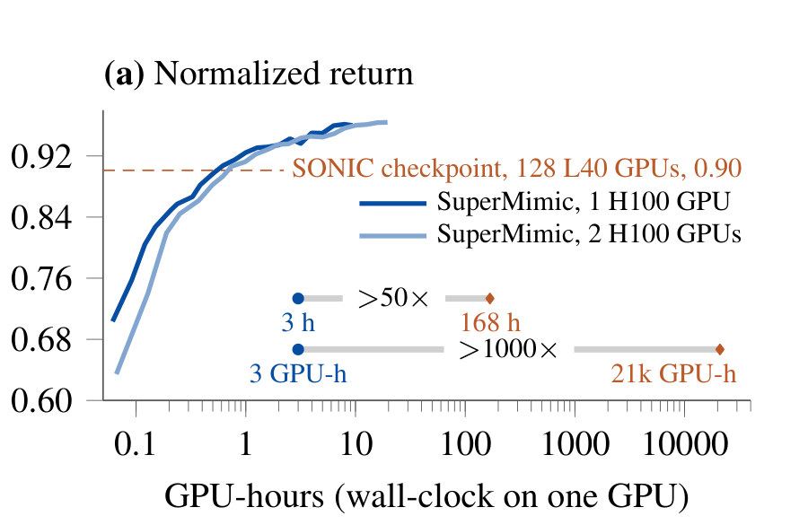
50×）、3 GPU-h 对 21k GPU-h（>1000×）">怎么读这张图
- 横轴：GPU-hours（单卡墙钟，对数）；纵轴 normalized return：整个 episode 不打折的 reward 和除以它的最大值，提前终止就分低。
- 橙色虚线：SONIC released checkpoint 的 0.90；深蓝是 1 卡、浅蓝是 2 卡的 SuperMimic，三者在同样 129,514 段动作上打分。
- 下方两条横杠：3 h 对 168 h（>50×），3 GPU-h 对 21k GPU-h（>1000×）。
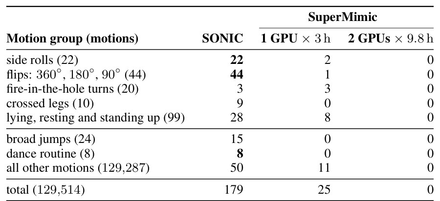
怎么读这张图
- 先看 side rolls、flips 两行：SONIC 加粗的 22 和 44 是整组失败；SuperMimic 3 h 时剩 2 和 1，9.8 h 后为 0。
- 上半五组：难动作，共 195 段；SuperMimic 3 h 时 25 个失败里有 14 个在这里。
- 最后一行：总计 179 / 25 / 0。
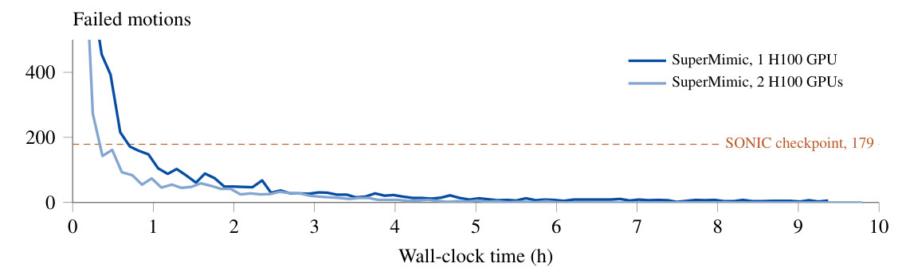
怎么读这张图
- 橙色虚线：SONIC checkpoint 的 179。
- 两条蓝线：1 卡、2 卡的失败数都在 1 h 内降到 179 以下（读图），之后贴近 0；2 卡那条在 9.8 h 时到 0。
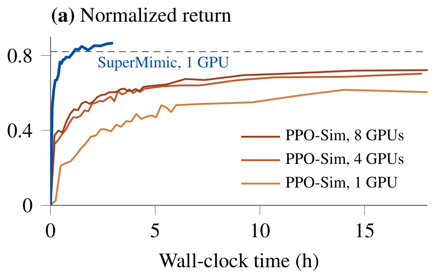
怎么读这张图
- 蓝线：SuperMimic 1 卡，在 world model 里 BPTT；1.2 h 到目标 0.82（虚线）。
- 三条橙线：PPO-Sim 1、4、8 卡，和 SuperMimic 用同样的动作、观测、reward、终止、domain randomization 和网络大小，每卡 8192 个环境（SuperMimic 的两倍）；18 h 内都没到 0.82。
Limits
局限和开放问题
- 多接口训练没研究透：速度 reward 只更新速度 encoder，不更新共享 decoder，所以“联训”等于先训 tracker 再训 encoder；decoder 也更新时联训是否有帮助，没测（§6）。
- 只学仿真动力学：world model 只用仿真 transitions；真机数据可以再细化它，它的可微性也可用于 system identification，都没做（§6）。
- 只有平地：不涉及地形和物体交互（§6）；数据过滤直接去掉了楼梯、箱子、椅子这类动作（App. E）。
- 评测范围：benchmark 动作就是训练动作，失败数衡量覆盖而非泛化（App. F.2）；图里不报 seed 方差（作者说多个 seed 都很稳，§4）；速度接口每个 policy 只有一个训练 seed（App. G.2）；真机只有 Fig. 6 的 4 段演示，没有成功率。
- 算力对比跨硬件、跨数据：SONIC 一侧是它报告的 128 L40 × 7 天和 released checkpoint，不是同条件重跑；同条件的对照只有 LAFAN1 上的 PPO-Sim（§4.1）。
Follow-ups · 截至 2026-10-30
复现和后续工作
- 官方没放代码和权重：只有论文、视频和浏览器 demo，demo 的许可证禁止提取参数。下面的复现都是社区做的，数字都是各自评测器里的自报，没有经过独立复核。
| 复现 | 做到哪一步 | 硬件 · 时长 | 自报结果 |
|---|---|---|---|
| realmimic | 全动作库，公开权重（.pt、ONNX）；真机承诺在 v1.1 | 1×RTX 4090，10.5 h | 129,491 段失败 10 段 |
| CuboiLeo | 全动作库；列出论文没写清的 20 处 | 4×RTX 5090，7.1 h | 失败 145 段（54 段空翻全失败） |
| supermimic_vibed | 只做 LAFAN1 对照 | 1×RTX PRO 6000，1.47 h | 0.829，40 段全过 |
| YanYuan98 | 只做 LAFAN1 | 1–2×RTX 5090，约 3 h | 0.850；按论文观测字面实现只有 0.564 |
论文是 1×H100 训 3 h 失败 25 段、2 卡 9.8 h 零失败；零失败还没人报告复现出来。真机上只有一段专门 fine-tune 的舞蹈（带保护绳），全动作库的 tracker 还没公开上真机。
决定结果的，是论文没写清的四处
- 参考朝向（anchor）：policy 输入里加上参考的相对朝向，LAFAN1 从 0.56–0.59 升到 0.80–0.90。Table A.1 只列本体感知，goal 每帧放什么论文没写；既然说沿用 BeyondMimic，它很可能本来就在 goal 里（我的判断）。
- 少见动作的重置采样：空翻在时间轴上占比极小，采样不改就几乎练不到。
- 片段最后一帧：32 步想象会跑出片段末尾；不把最后一帧冻住，policy 会学会在最后一帧摔倒。
- critic 发散：长时间训练 critic 会爆，需要截断它的目标值。
加上环境交互
| 工作 | 解决什么 | 怎么解决 | 和本文的区别 |
|---|---|---|---|
| 社区原型 supermimic-pera、supermimic_parkour 等 | 在 SuperMimic 上加地形、楼梯、搬箱 | height map、深度图、物体状态，或冻结后加 residual | 都只在仿真、自报；唯一同时试了楼梯和搬箱的项目两项都没成 |
| PWM ICLR 2025 | 多任务控制，含 50 个物体操作任务 | 一阶梯度穿过学到的 latent world model | 同样对模型求梯度，物体在 latent 里；只在仿真 |
| RWM、NeRD ETH、NVIDIA | 学一个神经仿真器，在里面训 policy | 在模型里跑 PPO；NeRD 用碰撞检测算接触特征 | 上了真机，但不对模型求梯度 |
| Model-free 交互 tracker HDMI、OmniRetarget、VideoMimic、PGMT | 真 G1 上开门、搬箱、上楼梯、跑酷 | 先训平地 tracker，再用 residual 或 adapter 接入物体位姿、高程图、深度 | 用 PPO；PGMT 的地形基准上，盲的 SONIC v1.1 只有 25%，PGMT 87.8% |
来源：2026-10-30 的一次网络调研（GitHub、Hugging Face、arXiv），社区数字均为自报。调研的建议：先做地形，再做物体；论文过滤掉的约 23 h 楼梯、箱子、椅子片段可以直接当数据。
For Robot learning in simulation
对我们有什么用
- Agent-centric-real-to-sim：real2sim-anything-indoor 用 GVHMR 从视频出人体动作，retarget 后正是这类 tracker 的输入。App. E 的可行性过滤可以直接拿来筛：最低的 link 离地 0.20 m 以上持续 ≥ 0.6 s（站在高处）、穿地超过 0.12 m、静止站立时双脚悬空超过 0.02 m 持续 ≥ 0.5 s。带家具的动作会被筛掉：SuperMimic 只做平地。
- WorldClaw 的 Genesis sim：这套做法不需要可微仿真器：从任意仿真器记录 transitions，学一个以仿真参数 ξ 为条件的可微模型，再经它求梯度，Genesis 也可以当数据源（推断，论文只用了 MuJoCo Warp）。但目前只验证了一个身体在平地上，WorldClaw 那种有物体、有家具的场景还是论文的 future work。
- Robotic-harness：App. B 的 goal 接口（完整参考、速度、末端位姿、SMPL 身体姿态）共用一个 decoder，很像 harness 里 agent 调用 humanoid 的 tool surface；§4.5 说明每个接口用自己的 task reward 训（RL）比蒸馏更准、更少摔。harness 若接 humanoid，可以把这些接口当工具暴露（我们的设想）。